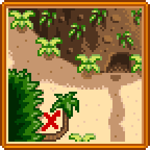

Journal Scraps
- See also: Secret Notes
Journal Scraps are collectable pieces of a sailor's journal that can be found on Ginger Island. They contain clues about solving puzzles, collecting  Golden Walnuts, and general information about the island.
Golden Walnuts, and general information about the island.
They can be activated in the same way as Secret Notes, by selecting it in the top row of inventory and right-clicking (as if consuming food). This will add the scrap to the player's collection.
The Magnifying Glass is not needed to obtain or use Journal Scraps, although once found they are contained on the same collection page as Secret Notes.
Unlike Secret Notes, Journal Scraps are always found in order (i.e., the first journal scrap found will always be Journal Scrap #1, the second Journal Scrap #2, etc.).
Journal Scraps can be gifted, but they are all universally hated.
Finding Journal Scraps
Journal Scraps are found in the same way as Secret Notes, except that they are found on Ginger Island. See this table for how journal scraps can be found.
Journal Scraps
Journal Scrap #1
| Note |
|---|
| Day 1
…My ship is lost… Shattered by a tempest in the unforgiving sea. I find myself stranded now, on these strange shores. My crew has perished, but I still live. Perhaps lady luck has blessed these wicked bones of mine… Or has her own designs for my fate… At any rate, I’ve no choice but to make a life for myself here. There’s fresh water in abundance, food to forage, and fertile soil to work. First I’ll build a shelter… (There are some pages missing) |
Journal Scrap #2
| Note |
|---|
| Day 6
I won’t go hungry here… the waters are full of edible (nay, delicious!) fish. I even caught a stingray in the caves by the southeast shore. I haven’t a clue what to do with it, though! The other day, I even fished up a couple of golden walnuts. They seem to be all over the island. The local parrots go crazy for them! |
| Details |
|---|
| Journal Scrap #2 explains the Golden Walnuts on the island, which can be used as a currency for Parrots. |
Journal Scrap #3
| Note |
|---|
| Day 14
After half a month on this island, I’ve learned a thing or two about finding these golden nuts. One must keep their eyes peeled for subtle clues. If something looks unusual, there may be a hidden nut nearby. I’ve noticed signs in the sand… and signs in the leaves… I even saw a nut up in a tree near the volcano. If only I had a way of shooting it down… Whenever I've spotted a nut plant, I've always found a way to reach it. |
| Solution |
|---|
| The Slingshot can be used to shoot down and collect a Golden Walnut on the east side of the Volcano. |
Journal Scrap #4
| Note |
|---|

|
| Solution |
|---|
| The map depicts an area just north of Birdie's hut. Digging here will yield a Quality Bobber and a Golden Walnut. |
Journal Scrap #5
| Note |
|---|
| Day 23
The local volcano holds many secrets. I've seen little men with glowing eyes, skittering about in the dark… like cats in the night. (Could these be the fabled dwarf-men, mentioned by M. Jasper in his 'Famous Journeys'?) Strange machines, too. Uncanny… not like anything known to man. At the top, I found a passage to the caldera of the volcano. And, half submerged in the bubbling lava, a peculiar machine… a kind of "forge". I'll investigate further tomorrow. |
| Solution |
|---|
| Floor 10 of the Volcano has a forge that can be used to enhance tools. |
Journal Scrap #6
| Note |
|---|

|
| Solution |
|---|
| The map depicts an area southeast of the Island Farmhouse. Digging here will reveal a Pearl and a Golden Walnut. |
Journal Scrap #7
| Note |
|---|
| --Forging Table--
Topaz -- Defense
Prismatic Shard -- Enchantment Note: Weapons can be forged up to 3 times with gems, and can also be enchanted once with a prismatic shard. Note 2: 'Innate Enchantments', (meaning those powers that sometimes appear on weapons when you first acquire them), can also be added or re-discovered using a Dragon Tooth. It's theorized that this cannot be done to weapons above a certain caliber. Tools can only be enchanted, not forged. |
Journal Scrap #8
| Note |
|---|
|
--Weapon Enchantments-- Artful: Allows you to do "special moves" more rapidly Bug Killer: Do more damage to bugs. Vampiric: Occasionally siphon health from a monster. Crusader: Do more damage to "unholy" monsters. Haymaker: When cutting weeds, you get more fiber, and also a chance to collect hay. --Tool Enchantments-- Powerful: Do more tool damage to stones, trees, and the like. Reaching: Increases your charge-up capacity, for a greater area of effect. Shaving: Chance to peel off additional wood when chopping. Bottomless: Watering can will never run dry. Generous: Dig up more from beneath the earth. Archaeologist: Greater chance to find artifacts and bones. Efficient: Takes no energy to use. Swift: Swing the tool faster. Master: Increases fishing level. Auto-Hook: Automatically hooks fish when they bite. Preserving: Bait and tackle have a 50% chance to not be consumed. |
Journal Scrap #9
| Note |
|---|
| 'Twas a rain drenched day, and upon a lonely rock a beautiful maiden saw I
Tales I'd heard of sea-born maidens singing siren's songs,
The next morning I spied an arrangement of stone upon the foamy bank...
|
| Solution | ||||||||||||||||||||||||||||||
|---|---|---|---|---|---|---|---|---|---|---|---|---|---|---|---|---|---|---|---|---|---|---|---|---|---|---|---|---|---|---|
| On rainy days a Mermaid will appear on the large rock by the shore. If the player places Flute Blocks and tunes them to play the Mermaid's song, she will reward them with 5 Golden Walnuts.
To play the Mermaid's song, place a Flute Block on top or below each set of stones on the shore, then tune each block by the amount of stones. A large stone symbolizes 5, and a small stone symbolizes 1. After tuning all 5 blocks, simply run past each one from left-to-right. Note that the player does not need to have read the journal scrap to do this.
Trivia: This tune is similar to the Mermaid show tune on the Night Market. Making it possible to play it correctly without the stone values. | ||||||||||||||||||||||||||||||


Journal Scrap #10
| Note |
|---|
|  |
| Solution |
|---|
| After finding Journal Scrap 10, digging at the spot shown outside the Volcano will yield an Ostrich Egg and a Golden Walnut. |
Journal Scrap #11
| Note |
|---|
| Day 37
When I was a boy of ten year old, my father gave me a glow ring and a magnet ring. They've never left my fingers since. However, when I was standing on top of the volcano… a strange idea came over me. I took my two rings, and cast them into the forge. Lo and behold! They combined into one! Now I've got one glowing magnet ring… I hope old pappy doesn't mind, rest his soul… |